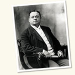

Browse Individuals & Groups

- Abbott, Charlotte (1)
- Abbott, Edith (22)
- Abbott, Frank Frost (1)
- Abbott, Grace (37)
- Abbott, Othman A. (1)
- Abbott, Wallace C. (1)
- Abraham, Bernard M. (1)
- Abt, Helmut A. (1)
- Adair, Fred Lyman (3)
- Adams, Huberta Livingstone (1)
- Adams, James Luther (1)
- Adams, Robert M. (4)
- Adams, Robert McCormick (8)
- Adams, William E. (5)
- Adams, Wright R. (3)
- Addams, Jane (4)
- Addington, Whitney W. (1)
- Adenauer, Konrad (2)
- Adkins, Arthur W. H. (1)
- Adler, Mortimer (9)
- Agnew, Harold (1)
- Ahlquist, Ruth (1)
- Ahlström, Gösta W. (2)
- Aït-Sahalia, Yacine (1)
- Al-Sadir, Jafar (2)
- Albert, A. Adrian (4)
- Albert, Abraham Adrian (1)
- Albert, Allen D. (1)
- Albert, Allen D., Jr. (1)
- Alberts, William W. (1)
- Albright, Ivan (2)
- Aldrich, C. Knight (1)
- Alexander, Elizabeth (3)
- Alexander, Will W. (1)
- Algren, Nelson (1)
- Alinsky, Saul (1)
- Allard, Jean (3)
- Allee, Warder Clyde (20)
- Allen, Carl E. (5)
- Allen, Francis A. (1)
- Allen, Greer (3)
- Allen, Jonathan Adams (1)
- Allen, Joseph Garrott (4)
- Allen, Leroy Banks (1)
- Allen, Philip Schuyler (1)
- Allen, Thomas George (1)
- Allison, Nathaniel (2)
- Allison, Samuel K. (31)
- Alonso, Amado (1)
- Altmann, Jeanne (4)
- Alvarez, Luis W. (2)
- Alving, Alf S. (1)
- Ames, Edward S. (4)
- Anagnostopoulos, Constantine E. (5)
- Anastaplo, George (1)
- Anders, Edward (43)
- Andersen, Ronald (1)
- Anderson, C. Arnold (4)
- Anderson, Charles Palmerston (1)
- Anderson, Galusha (9)
- Anderson, H. A. (1)
- Anderson, Herbert L. (8)
- Anderson, J. Kyle (37)
- Anderson, Kate S. (1)
- Anderson, Odin W. (1)
- Anderson, Robert O. (1)
- Anderson, Roger E. (1)
- Anderson, Sherwood (3)
- Anderson, William France (3)
- Anderson, Wilma (1)
- Anderson, Winston A. (2)
- Andrews, Clement Walker (6)
- Angell, James Burrill (2)
- Angell, James Rowland (2)
- Angelus, John P. (5)
- Anker, Herbert S. (3)
- Antelman, Gordon R. (1)
- Anthropology Department (16)
- Antonacci, Robert J. (1)
- Apitz, Lawrence (1)
- Appadurai, Arjun (2)
- Applebury, Meredithe L. (2)
- Arciniegas, Germán (1)
- Armour, George A. (1)
- Armstrong, Patricia (1)
- Arnett, Trevor (1)
- Arnett, W. David (4)
- Arnold, Albert Nicholas (1)
- Arnold, James R. (3)
- Aronson, Arnold (1)
- Aronson, Howard I. (1)
- Arrow, Kenneth J. (1)
- Asada, Eiji (1)
- Asheim, Lester E. (7)
- Ashin, Mark (1)
- Atchison, John (1)
- Atkins, Paul (1)
- Atkins, W. James (1)
- Atlas, David (5)
- Atwood, Kimball C. (1)
- Audrain, Calvert W. (3)
- Austill, Allen (1)
- Avery, Sewell L. (1)
- Axelrod, Joseph (1)
- Axelson, K. S. (1)
- Ayala, Francisco (1)
- Azrael, Jeremy R. (2)
- Baber, Zonia (4)
- Bach, Ira (1)
- Bachhofer, Ludwig (1)
- Bachmeyer, Arthur (6)
- Bacon, Edmund N. (1)
- Baer, Arthur A. (5)
- Bahadur, R. R. (1)
- Baist, Gottfried (1)
- Bakan, David (1)
- Baker, Alfred (2)
- Baker, Keith M. (1)
- Baker, Roger C., Jr. (1)
- Baker, Wayne (1)
- Baker, William K. (2)
- Bald, Robert C. (1)
- Baldridge, Cyrus L. (1)
- Ballard, Lynn A. (1)
- Banda, Hastings (4)
- Banda, Hastings K. (2)
- Bane, Frank (1)
- Banks, Judy (2)
- Baptist Union Theological Seminary (31)
- Barber, Ruland (1)
- Barclay, William R. (2)
- Barden, Dennis M. (2)
- Barker, Norman Jr. (2)
- Barnard, Edward Emerson (1)
- Barnes, Charles Reid (1)
- Barnett, A. Doak (1)
- Barnett, Albert E. (1)
- Barnett, Ferdinand Lee (4)
- Barrett, Charles S. (7)
- Barrett, Oscar W. (1)
- Barrón, Eleazar S. Guzmán (9)
- Barrows, Harlan H. (3)
- Barrows, John Henry (1)
- Barry, Brian (2)
- Barsalou, Lawrence W. (2)
- Barth, Karl (13)
- Bartky, Walter (7)
- Baskerville, Charles Read (2)
- Bassett, Edward L. (8)
- Bastin, Edson (1)
- Bauer, Stephan (1)
- Bay, Emmet B. (4)
- Bay, J. Christian (12)
- Beach, Frank A. (1)
- Beadle, George W. (71)
- Beadle, Muriel McClure (3)
- Beale, Joseph Henry (1)
- Bean, Donald P. (1)
- Beauchamp, Wilbur L. (1)
- Beaumont, William (6)
- Beaven, Joseph C. (1)
- Beck, Charlton T. (3)
- Becker, Mary E. (5)
- Bedford, Scott (1)
- Beem, Marc O. (1)
- Beeson, Charles Henry (7)
- Beisel, Ervin E. (1)
- Belfield, Henry H. (1)
- Bell, Harold (1)
- Bell, Laird (3)
- Bell, Ola Walter (1)
- Bellow, Saul (21)
- Bemesderfer, Karl J. (3)
- Benditt, Earl P. (3)
- Beneš, Edvard (1)
- Bengelsdorf, Irving (1)
- Bennett, Henry Stanley (6)
- Bensinger, Benjamin E. (1)
- Bensley, Robert Russell (1)
- Benson, Donald W. (1)
- Benson, Martha (1)
- Bentley, Gerald E. (1)
- Benton, Elma Hixson (5)
- Benton, Helen Hemingway (2)
- Benton, William (85)
- Berelson, Bernard R. (2)
- Berger, Joel S. (1)
- Bergquist, Laura (9)
- Berkelhamer, Jay (4)
- Berman, Ronald S. (4)
- Bernays, Michael (1)
- Berner, Robert A. (1)
- Bernstein, Sidney R. (1)
- Berry, Brian J. L. (1)
- Berwanger, Jay (21)
- Bestor, Arthur E., Jr. (1)
- Bethe, Hans A. (2)
- Bettelheim, Bruno (7)
- Bevan, Arthur D. (2)
- Bevan, Arthur Dean (1)
- Beyer, Erwin F. (2)
- Bhabha, Homi K. (1)
- Bibbo, Marluce (1)
- Biewener, Andrew A. (1)
- Bigelow, Harry A. (4)
- Biggs, Mary (2)
- Bilandic, Michael (1)
- Billings, Albert Merritt (1)
- Billings, Frank (3)
- Billingsley, Patrick (2)
- Bills, Arthur G. (1)
- Binder, Leonard (1)
- Binker, Edith (1)
- Bird, H. Waldo (1)
- Bishop, Barbara J. (1)
- Bishop, Henry W. (1)
- Bitting, William C. (1)
- Bixler, Roy White (2)
- Blackburn, Bonnie J. (3)
- Blackstone, Timothy Beach (1)
- Blackwood, Easley (20)
- Blair, George (1)
- Blair, Walter (2)
- Blaisdell, Richard K. (1)
- Blatchford, Eliphalet W. (2)
- Blatchford, Eliphalet Wickes (1)
- Blattberg, Robert C. (1)
- Blau, Peter M. (1)
- Blayney, James R. (6)
- Bliss, Gilbert Ames (9)
- Bloch, Herman S. (1)
- Bloch, Konrad Emil (1)
- Bloch, Robert G. (1)
- Block, Barbara (2)
- Block, George E. (1)
- Block, Louis (1)
- Block, Philip D. (1)
- Bloom, Allan (3)
- Bloom, Benjamin (3)
- Bloom, William (8)
- Bloomfield, Leonard (1)
- Bloomfield, Maurice (1)
- Blough, Roy (1)
- Blum, Alfred A. (3)
- Blum, Walter J. (3)
- Blumer, Herbert G. (1)
- Blunt, Katharine (2)
- Boand, Charles W. (1)
- Board of Trustees Portraits, University of Chicago (138)
- Board of Trustees, University of Chicago (6)
- Bobp, Nellie (1)
- Bobrinskoy, George V. (2)
- Bogardus, Mary I. (1)
- Bogert, George G. (4)
- Bogorad, Lawrence (27)
- Bohr, Niels (1)
- Boise, James Robinson (1)
- Boland, Frederick H. (1)
- Bolkestein, Gerrit (1)
- Bolza, Oscar (1)
- Bond, Donald F. (1)
- Bond, Joseph (1)
- Bond, Judith (1)
- Bond, Mary A. (3)
- Bonner, Robert J. (1)
- Bookstein, Abraham (1)
- Boop, John M. (5)
- Boorstin, Daniel J. (7)
- Booth, Charles (1)
- Booth, Wayne C. (24)
- Borgese, Giuseppe A. (1)
- Borland, Chauncey B. (1)
- Boswell, Arnita (1)
- Botany Department, University of Chicago (2)
- Boucher, Chauncey S. (2)
- Bouras, Harry (8)
- Bourne, Henry E. (1)
- Bovée, Arthur Gibbon (1)
- Bovinette, Robert (1)
- Bowen, Merlin S. (1)
- Bowen, Norman L. (4)
- Bower, William C. (1)
- Bowles, Chester B. (1)
- Bowman, James E. (1)
- Bowman, Mary Jean (1)
- Boycheff, Kooman (3)
- Boylan, Delia M. (1)
- Boynton, Melbourne W. (1)
- Boynton, Percy H. (1)
- Bradburn, Norman (1)
- Bradbury, William Chapman (1)
- Bradford, Amory H. (1)
- Bradford, Donald (5)
- Braidwood, Robert J. (3)
- Braidwood, Robert J. and Braidwood, Linda (1)
- Braidwood, Robert J. and Braidwood, Linda S. (12)
- Brandt, Joseph A. (1)
- Branner, John Casper (1)
- Branscombe, Martha (1)
- Braude, Joseph M. (1)
- Brauer, Jerald C. (5)
- Breasted, James Henry (28)
- Breckinridge, Sophonisba Preston (27)
- Bretz, J Harlen (12)
- Breul, Frank R. (1)
- Bricken, Carl E. (2)
- Bridges, Edwin M. (1)
- Brieland, Donald (2)
- Brinton, Mary C. (1)
- Briziarelli, Giuliano (1)
- Brodie, Frank (5)
- Broelsch, Christoph E. (2)
- Brogan, Denis W. (1)
- Bromberger, Sylvain (1)
- Broneer, Oscar (3)
- Brooks, Fred R., Jr. (2)
- Brown, Andrew W. (1)
- Brown, Edward Killoran (1)
- Brown, George H. (1)
- Brown, Harrison Scott (4)
- Brown, Herbert Charles (1)
- Brown, Howard M. (1)
- Brown, James (1)
- Brown, Raymond E. (4)
- Browning, Don S. (1)
- Brozen, Yale (3)
- Bruce, Alexander Balmain (2)
- Bruce, James Charles (8)
- Bruckner, D. J. R. (3)
- Bruère, Richard T. (1)
- Brues, Austin M. (3)
- Brumbaugh, Aaron J. (2)
- Brunschwig, Alexander (3)
- Bryk, Anthony S. (2)
- Buchanan, Douglas N. (1)
- Buck, Carl Darling (3)
- Budd, Britton I. (1)
- Budington, William S. (2)
- Buikstra, Jane E. (10)
- Buildings and Grounds (17)
- Buitenen, J. A. B. van, 1928-1979 (2)
- Buiter, Jeanne (2)
- Bunche, Ralph (9)
- Bundesen, Herman N. (1)
- Burdett, Jeremy K. (3)
- Burfield, Leone M. (1)
- Burgess, Ernest W. (5)
- Burgess, Ernest Watson (2)
- Burks, James L. (1)
- Burnett, Orville S. (1)
- Burns, Dean (1)
- Burrows, William (3)
- Burton, Ernest DeWitt (40)
- Burton, John F. (1)
- Busby, Leonard A. (2)
- Business School (1)
- Buswell, Guy T. (1)
- Butcher, Fanny (1)
- Butler, Nathaniel (5)
- Button, James W. (1)
- Butzerin, Eula B. (1)
- Byers, Horace R. (7)
- Byrne, Muriel St. Clare (1)
- Cahill, Arthur R. (2)
- Cain, Stanley A. (2)
- Calderón, Alberto P. (5)
- Calef, Wesley (2)
- Callahan, Loel (1)
- Callaway, John (9)
- Camerer, Colin F. (2)
- Camille, Michael (1)
- Campbell, Elmer Simms (3)
- Campbell, F. Gregory (1)
- Campbell, James A. (1)
- Campbell, Roald F. (3)
- Cannon, Paul R. (13)
- Cannon, William B. (1)
- Cantieri, John (1)
- Capps, Joseph A. (1)
- Capser, James (5)
- Carlson, Anton J. (28)
- Carnap, Rudolph (2)
- Carnovsky, Leon (6)
- Carnovsky, Morris (3)
- Carpe, Allen (2)
- Carpenter, Emma Cook (1)
- Carpenter, Frederic Ives (1)
- Carpenter, Frederic Ives and Carpenter, Emma Cook (1)
- Carpenter, Frederic Ives, Jr. (2)
- Carpenter, Mark (2)
- Carr, Anne E. (1)
- Carr, Harvey A. (1)
- Carr, Margaret E. (1)
- Carrel, Alexis (1)
- Case, Shirley Jackson (3)
- Case, Theodore J. (1)
- Casey, Samuel B., Jr. (1)
- Caspari, Fritz (1)
- Casper, Gerhard (10)
- Cassels, Donald E. (2)
- Castle, Clarence Fassett (2)
- Castle, Henry Northrop (1)
- Cate, James Lea (3)
- Caton, Arthur J. (1)
- Cavers, David Farquhar (1)
- Cawelti, John (1)
- Cawelti, John G. (4)
- Cayton, Horace R. (1)
- Ceithaml, Joseph J. (1)
- Chagall, Marc (2)
- Chamberlain, Charles J. (11)
- Chamberlain, Owen (1)
- Chamberlain, Owen O. (1)
- Chamberlin, Rollin T. (15)
- Chamberlin, Thomas Chrowder (11)
- Chambers, Paul (3)
- Chandler, Charles (1)
- Chandler, Marvin (1)
- Chandler, William Knox (2)
- Chandra, Pramod (4)
- Chandrasekhar, Lalitha D. (1)
- Chandrasekhar, Subrahmanyan (40)
- Chang, Peng-Chun (1)
- Chapin, Charles Value (1)
- Chapman, Carl F. (1)
- Chapman, Charlotte Gower (1)
- Charlesworth, Brian (2)
- Charters, Werrett Wallace (1)
- Chase-Lansdale, P. Lindsay (1)
- Chase, Francis Seabury (2)
- Chaucer Project (10)
- Chave, Ernest John (1)
- Chemistry Department (1)
- Chernick, Cedric L. (1)
- Chicago Philosophy Club (1)
- Chizek, Cletus F. (2)
- Cho, Yongock (6)
- Churchwell, Thomas (2)
- Cibils, Luis A. (1)
- Cipriani, Lisi, Countess (1)
- Claffey, Michael E. (2)
- Clark, Dwight E. (8)
- Clark, Faith (1)
- Clark, John M. (1)
- Clark, John Maurice (1)
- Clark, Peter B. (1)
- Clark, Ramsey (1)
- Clark, Solomon Henry (5)
- Clarke-Stewart, Alison (1)
- Clarke, John Mason (1)
- Class of 1915 (1)
- Class of 1917 (1)
- Cleveland, Paul H. (1)
- Closs, Gerhard L. (3)
- Clough, S. DeWitt (2)
- Coatsworth, John H. (1)
- Cobb, Henry Ives (1)
- Cobb, Silas B. (3)
- Cochran, Dwight M. (1)
- Cochrane, Eric W. (5)
- Cody, Arthur C. (2)
- Coetzee, J. M. (17)
- Coggeshall, Lowell T. (24)
- Cohen, David J. (1)
- Cohen, Selma J. (1)
- Cohler, Bertram J. (2)
- Cohn, Bernard S. (2)
- Colby, Charles Carlyle (4)
- Cole, Fay-Cooper (8)
- Cole, Hugh Marshall (2)
- Coleman, Edward (1)
- Coleman, Edward C. (1)
- Coleman, James S. (8)
- Collins, Adela Y. (1)
- Collitz, Hermann (1)
- Colver, Nathaniel (4)
- Colwell, Ernest Cadman (24)
- Commission on the Freedom of the Press (1)
- Committee on Comparative Study of New Nations (1)
- Committee on Social Thought (58)
- Compere, Edward L. (1)
- Compton, Arthur Holly (27)
- Comptroller's Office (2)
- Conant, Eaton H. (2)
- Cone, Fairfax M. (33)
- Congreve, Willard J. (1)
- Conrad, Joseph E. (1)
- Conte, Jon R. (1)
- Cook, Paul W. (2)
- Cook, Walter Wheeler (1)
- Cooksey, Esther (1)
- Coolidge, A. Knight (1)
- Coolidge, Dr. (1)
- Coppersmith, Susan N. (2)
- Cordier, Andrew W. (2)
- Corey, Stephen M. (2)
- Cornell, Paul (2)
- Cortelyou, John R. (2)
- Cottingham, James (2)
- Cotton, Albert F. (1)
- Cotton, Alfred Cleveland (1)
- Couch, William T. (1)
- Coulborn, Rushton (1)
- Coulson, John S. (1)
- Coulter, John Merle (17)
- Coulter, Merle Crowe (3)
- Council on Medical and Biological Research (1)
- Covault, Corbin E. (1)
- Cover, John H. (1)
- Cowan, Louis G. (3)
- Cowles, Alfred (1)
- Cowles, Alfred, III (1)
- Cowles, Henry Chandler (11)
- Cowley, Anne Pyne (1)
- Cowley, William Harold (2)
- Cox, Clifford E. (1)
- Cox, Garfield Vestal (5)
- Cox, Geoffrey M. (2)
- Cozzarelli, Nicholas R. (2)
- Craigie, William Alexander (2)
- Cramer, Maurice B. (1)
- Crane, Charles Richard (1)
- Crane, Cornelia Smith (1)
- Crane, Florence Higinbotham (1)
- Crane, Richard Teller (1)
- Crane, Richard Teller, Jr. (1)
- Crane, Ronald Salmon (2)
- Craswell, Richard (1)
- Craven, Avery O. (3)
- Creel, Herrlee G. (2)
- Crerar Library (6)
- Crerar, Agnes Smeallie (1)
- Crerar, John (17)
- Crewe, Albert V. (5)
- Crewe, Albert Victor (5)
- Crippen, Guy C. (1)
- Crisler, Herbert O. (3)
- Cromwell, James H. R. (1)
- Crone, Anna Lisa (4)
- Croneis, Carey G. (1)
- Cross, Tom Peete (1)
- Crosskey, William W. (1)
- Crow, Martha Foote (8)
- Crown, Lester (2)
- Crutzen, Paul J. (6)
- Culianu, Ioan P. (1)
- Cullen, Thomas (1)
- Culp, Jerome M., Jr. (1)
- Culver, Helen C. (1)
- Cummings, E. E. (1)
- Cummings, Nathan (1)
- Cunningham, Robert M. (1)
- Curie, Marie (1)
- Currie, Brainerd (1)
- Currie, David P. (7)
- Cutler, Preston (1)
- Cutting, Starr Willard (1)
- Dack, Gail M. (3)
- Dahlberg, Albert A. (3)
- Daines, Harvey C. (1)
- Daley, Richard J. (1)
- Daly, Charles U. (7)
- Dammann, John Francis (1)
- Daniels, Robert S. (1)
- Danton, Ronald (2)
- Dao, Thomas (1)
- Dao, Thomas L. (1)
- Darwin, Charles (1)
- Daston, Lorraine J. (1)
- Davenport, Horace W. (1)
- Davenport, John L. (2)
- Davey, John R. (2)
- Davidson, Arnold I. (3)
- Davidson, Donald H. (1)
- Davidson, Sidney (3)
- Davies, H. Stanley (1)
- Davies, Peter F. (1)
- Davis, Abel (2)
- Davis, Allison (8)
- Davis, Benjamin O. (2)
- Davis, Kathryn Bement (1)
- Davis, Kenneth C. (1)
- Davis, Morris E. (5)
- Davisson, Clinton J. (1)
- Davisson, Clinton Joseph (1)
- Dawson, Peter J. (5)
- Day, J. Edward (2)
- De La Torre, Jack (8)
- Debreu, Gérard (1)
- DeBruyn, Peter P. H. (7)
- Debus, Allen G. (4)
- Dedmon, Claire L. (1)
- Dedmon, Emmett (7)
- Deering, Charles (1)
- Deerwester, Scott (1)
- Defebaugh, Martha Barker (1)
- Delaney, Michael J. (1)
- DeLee, Joseph B. (4)
- DeLee, Joseph Bolivar (1)
- Delkit, Mlle. (1)
- Demarque, Pierre (1)
- DeMille, Cecil B. (1)
- Dempster, Arthur J. (8)
- Demsetz, Harold (3)
- Deneen, Charles Samuel (1)
- Denney, Reuel (4)
- Dernberger, Robert (1)
- Derr, Paul H. (2)
- Desan, Philippe (2)
- Deutsch, Samuel (1)
- Dever, William Emmett (1)
- Dewey, George (1)
- Dewey, John (10)
- Dewey, Melvil (1)
- Diamond, Irving T. (2)
- Dick, Albert B., Jr. (2)
- Dick, George F. (4)
- Dick, Jane Warner (2)
- Dickerson, James Spencer (3)
- Dickinson, Anna Wilson (1)
- Dickinson, Michael H. (1)
- Dickinson, Ruth Allen (1)
- Dickinson, William R., Jr. (1)
- Dickson, Bruce W. (1)
- Dickson, Leonard E. (1)
- Dieckmann, William J. (12)
- Dille, John F., Jr. (3)
- Dimock, Edward C., Jr. (2)
- DiPietro, Robert J. (1)
- Dippold, Albert P. (1)
- Divinity Faculty (1)
- Dixon, Arthur Lewis (3)
- Dixon, Wesley M., Jr. (2)
- Dixson, Zella Allen (8)
- Dodd, Martha Eccles (1)
- Dodd, William Edward (10)
- Dodson, John Milton (1)
- Doisy, Edward A. (1)
- Donagan, Alan (1)
- Donnelley, Gaylord (47)
- Donnelly, Peter J. (1)
- Donnelly, Russell J. (2)
- Dordek, Etta and Dordek, Israel (1)
- Dorfman, Albert (6)
- Dorson, Richard M. (1)
- Douglas, Paul H. (7)
- Douglas, Stephen A. (1)
- Doull, John (1)
- Downing, Elliot R. (1)
- Doyle, Wayne J. (2)
- Doyle, William L. (1)
- Dragovan, Mark W. (1)
- Dragstedt, Lester R. (17)
- Draper, Andrew Sloan (1)
- Drell, Maurice (1)
- Dreyfus, Laurence (3)
- Driver, Harold E. (1)
- Drummond, Henry (1)
- Dubnow, Rochelle (1)
- DuBois, Kenneth P. (2)
- Duck, Patrick (1)
- Duckett, Eleanor Shipley (1)
- Duckworth, Ruth (1)
- Duda, Dr. (1)
- Duddy, Edward A. (1)
- Dudley, Gertrude (1)
- Duffie, Burton (2)
- Duffield, Robert B. (1)
- Duggan, Mark (2)
- Dulbecco, Renato (1)
- Duncan, Douglas (4)
- Duncan, Kunigunde (1)
- Duncan, Starkey D., Jr. (3)
- Duncan, Starkey, Jr. (1)
- Dunham, Allison (6)
- Dunham, Katherine (1)
- Dunkel, Harold B. (1)
- Dunlop, Albert M. (1)
- Dunne, Robert J. (1)
- Durham, Earl L. (1)
- Dyrud, Jarl E. (2)
- Easterbrook, Frank H. (2)
- Eastman, Dean E. (2)
- Eastman, Fred (1)
- Easton, David (2)
- Eaton, Cyrus S. (2)
- Eaton, Davida Harper (1)
- Eaton, Newman Bridge (1)
- Eberhard, Wolfram (1)
- Ebersole, Gary L. (1)
- Ebert, Robert H. (8)
- Eby, Kermit (4)
- Eccles, John C. (1)
- Eckels, George M. (1)
- Eckels, James H. (1)
- Eckersall, Walter H. (11)
- Eckhart, Bernard A. (2)
- Edelstein, Teri J. (2)
- Edie, Lionel D. (1)
- Edisen, Adele (1)
- Edwards, Corwin D. (2)
- Edwards, Davis (1)
- Eggan, Fred (4)
- Ehre, Milton (3)
- Einarson, Benedict (1)
- Eisendrath, Carl W. (1)
- Eisenman, Robert (1)
- Elam, James O. (2)
- Eldredge, Frances (1)
- Eliade, Mircea (3)
- Eliot, T. S. (10)
- Elizabeth, Queen of England (1)
- Ellinger, Oscar (1)
- Ellison, Ralph (1)
- Elvey, Christian T. (4)
- Embree, Edwin R. (1)
- Embree, John F. (1)
- Emerson, Alfred E. (6)
- Englander, Roger (17)
- English, Maurice (1)
- Entwhistle, Jean (1)
- Epstein, David F. (1)
- Epstein, Dena (2)
- Epstein, Laura (5)
- Epstein, Max (2)
- Erbring, Lutz (2)
- Erickson, Donald A. (2)
- Estabrook, Henry Dodge (1)
- Esterly, James (1)
- Evans, Audrey E. (1)
- Evans, Earl A., Jr. (7)
- Evans, Mack (2)
- Exman, Eugene (1)
- Fackler, Walter D. (2)
- Failey, Crawford Fairbanks (1)
- Fairweather, George O. (3)
- Fallers, Margaret C. (4)
- Fan, Chang-Yun (2)
- Fanconi, Guido (1)
- Fang, Victor S. (1)
- Fano, Ugo (2)
- Fanton, Jonathan F. (2)
- Farr, Shirley (1)
- Farwell, Robert L. (1)
- Faulkner, William (2)
- Fauman, Beverly (3)
- Fauman, Beverly J. (4)
- Faunce, William H. P. (1)
- Faust, Clarence H. (2)
- Feder, Walter (3)
- Federated Theological Faculty, University of Chicago (6)
- Fee, George (1)
- Fefferman, Charles L. (3)
- Feiler, Arthur (1)
- Feldman, Nancy (1)
- Feldman, S. (1)
- Felsenthal, Eli B. (1)
- Ferguson, Donald J. (1)
- Ferguson, Lloyd A. (4)
- Ferguson, Robert A. (2)
- Fermi Institute (9)
- Fermi, Enrico (46)
- Fermi, Enrico and Fermi, Laura (5)
- Fermi, Laura (21)
- Fernández Morán, Humberto (18)
- Ferrari, Virginio (21)
- Ferrier, Malcolm D. (1)
- Field, James A. (1)
- Field, Marshall (2)
- Field, Marshall, III (1)
- Field, Marshall, V (1)
- Field, Stanley (1)
- Fields, Thomas H. (1)
- Filbey, Emery T. (16)
- Finer, Herman (2)
- Finkel, Asher J. (1)
- Finlayson, Birdwell (1)
- Firby, R. James (3)
- Fischer-Dzoga, Katti (1)
- Fischman, Donald A. (4)
- Fishbein, Morris (2)
- Fisher, D. Jerome (1)
- Fisher, Lawrence (4)
- Fiske, Horace Spencer (1)
- Flacks, Richard (1)
- Fleischer, Heinrich (2)
- Fleming, Graham R. (2)
- Flinn, Thomas E., Jr. (1)
- Flint, Edith Foster (3)
- Flint, Nott William (2)
- Flook, Lyman R. (1)
- Flory, William N. (2)
- Folin, Otto (3)
- Ford, Gerald R. (1)
- Forsyth, Robert (3)
- Fortnow, Lance (2)
- Foster, Alice (1)
- Foster, George B. (1)
- Foster, George Burman (1)
- Foster, Nancy (1)
- Fox, Eugene N. (2)
- Francis, Jennifer (2)
- Franck, James (14)
- Frankenstein, Alfred V. (1)
- Frankfort, Henri (1)
- Franklin, Aurelia Whittington (1)
- Franklin, John Hope (65)
- Franzén, Gösta (5)
- Frederika of Greece, Queen (4)
- Freed, Daniel (1)
- Freed, Daniel S. (1)
- Freedman, Daniel X. (11)
- Freedman, Lawrence Z. (3)
- Freedman, Lewis (1)
- Freeman, Frank N. (2)
- Freeman, Leslie G. (2)
- Freeman, Martin J. (1)
- Freud, Anna (3)
- Freund, Ernst (4)
- Fried, Josef (4)
- Friedan, Daniel H. (1)
- Friedberg, Martha (1)
- Friedkin, Morris (1)
- Friedman, Albert B. (1)
- Friedman, Arthur (2)
- Friedman, Mendel (1)
- Friedman, Milton (10)
- Friend, Hugo (2)
- Fritzsche, Hellmut (1)
- Fromm, Erika (2)
- Fromm, Paul (1)
- Frost, Edwin Brant (1)
- Fry, R. J. Michael (1)
- Frye, Northrop (1)
- Fuchs, Elaine V. (2)
- Fujita, Tetsuya (14)
- Fuller, George D. (1)
- Fuller, Henry Blake (1)
- Fulton, W. Joseph (1)
- Fulton, William (3)
- Fultz, David (5)
- Funk, Robert W. (1)
- Furet, François (1)
- Furtkamp, Eric G. (1)
- Fussler, Herman (8)
- Gaffron, Hans (1)
- Gale, Henry Gordon (16)
- Gallagher, Mrs. Thomas, F. (1)
- Gallagher, Thomas, F. (3)
- Garber, Beatrice (8)
- Garber, Daniel (3)
- Garrett, Elizabeth (1)
- Garrison, Winfred E. (1)
- Gates, Frederick Taylor (1)
- Geertz, Clifford (1)
- Geiling, Eugene (21)
- Geiling, Eugene M. K. (35)
- Gelb, Ignace (2)
- Gelb, Ignace J. (5)
- Gell-Mann, Murray (1)
- Geology and Geography Departments (3)
- Geology Department (8)
- Geophysics Department (1)
- Géraldy, Paul (1)
- Gerard, Ralph W. (8)
- Gerrish, Brian A. (1)
- Gerson, Noel (1)
- Gerson, Noel B. (1)
- Gertz, Elmer (1)
- Getz, Donald R. (1)
- Gewirth, Alan (1)
- Gibson, Robert L. Jr. (1)
- Gide, André (1)
- Gideonse, Harry D. (1)
- Gidwitz, Emily Klein (1)
- Giesbert, Edmund W. (2)
- Gieseman, A. Wayne (3)
- Gigerenzer, Gerd (2)
- Gilkey, Charles W. (9)
- Gilkey, Langdon (1)
- Gilman, Daniel C. (1)
- Gilman, Sander L. (4)
- Gilmore, Grant (1)
- Ginsberg, Allen (1)
- Ginsburg, Benson (11)
- Ginsburg, Benson E. (9)
- Ginsburg, Norton (1)
- Ginsburg, Norton S. (3)
- Ginther, John R. (2)
- Ginzel, Roland (1)
- Gleiser, Fern W. (1)
- Glick, Milton L. (1)
- Glidewell, John C. (1)
- Goepp, Robert A. (2)
- Goertz, Raymond (1)
- Goerwitz, Richard L. (2)
- Golb, Norman (5)
- Goldbarg, Alberto (2)
- Goldberg, Edward D. (1)
- Goldberg, Homer (1)
- Goldberg, Leon I. (4)
- Goldblatt, Maurice H. (4)
- Goldiamond, Israel (2)
- Goldsmith, Ethel F. (1)
- Goldsmith, Julian (2)
- Goldstrich, Belle K. (1)
- Goldwasser, Eugene (12)
- Gomer, Robert (1)
- Gomez, Christina (1)
- Gomori, George (1)
- Goode, John Paul (1)
- Goode, Katherine Hancock (1)
- Goode, Richard B. (1)
- Goodlad, John I. (1)
- Goodman, Benedict K. (1)
- Goodman, James (1)
- Goodspeed, Edgar J. (20)
- Goodspeed, Florence Mills (3)
- Goodspeed, George S. (1)
- Goodspeed, Thomas Wakefield (13)
- Gordon, A. R. (2)
- Gordon, Harold J. (1)
- Gordon, Robert B. (1)
- Gore, Budd (1)
- Gore, Richard T. (1)
- Gosnell, Harold F. (2)
- Gossett, Philip (1)
- Gottschalk, Alexander (4)
- Gottschalk, Louis (4)
- Gottschalk, Louis R. (7)
- Gould, Chester (1)
- Goulet, Charles (2)
- Goulian, Mehran (8)
- Graber, Thomas M. (1)
- Gradle, Harry S. (1)
- Graff, Gerald (1)
- Graff, Philip W. (1)
- Graham, Katharine (2)
- Graham, Mark T. (2)
- Graham, Philip L. (2)
- Grandgent, Charles H. (1)
- Grant, Robert M. (1)
- Graves, Lawrence M. (12)
- Gray, Charles M. (12)
- Gray, Hanna H. (1)
- Gray, Hanna Holborn (33)
- Gray, Seymour J. (1)
- Gray, William Scott (3)
- Grayston, J. Thomas (3)
- Greeley, Andrew (1)
- Green, David, Jr. (1)
- Green, Harold J. (1)
- Green, John W. (7)
- Greene, Toby (1)
- Greenebaum, Michael (1)
- Greenebaum, Robert J. (1)
- Greenfield, Larry L. (4)
- Greenleaf, Cynthia (1)
- Greenstein, Jesse L. (1)
- Greenstone, J. David (1)
- Gregory, Caspar René (1)
- Grene, David (10)
- Grey, Charles F. (1)
- Grey, Lennox B. (1)
- Grier, David G. (5)
- Griliches, Zvi (1)
- Grodzins, Morton (4)
- Gross, David (1)
- Grosscup, Peter S. (1)
- Grossman, James (2)
- Groups, Unidentified (5)
- Groves, Eugene (1)
- Groves, Leslie R. (1)
- Gundersen, Henrik (1)
- Gunderson, H. (1)
- Gunn, Giles B. (1)
- Gunness, Robert C. (4)
- Gunsaulus, Frank Wakeley (4)
- Gunther, John (5)
- Gurney, Clifford W. (1)
- Gustafson, James Moody (1)
- Gustavson, Reuben G. (3)
- Güterbock, Hans G. (4)
- Guthrie, Tyrone (1)
- Gwinn, Robert P. (1)
- Gwynn, Stanley (2)
- Gyarfas, Mary Gorman (2)
- Habakkuk, John (10)
- Haberlandt, Gottlieb (1)
- Hackenberg, Michael R. (2)
- Hackett, Merilyn (1)
- Haden, William R. (1)
- Hafner, Stefan S. (1)
- Haile, Berard, O.F.M. (1)
- Haines, Richard C. (1)
- Halcrow, George C. (1)
- Hale, George Ellery (2)
- Hale, Harriet Swinburne (1)
- Hale, William Gardner (4)
- Hale, William H. (1)
- Haley, William J. (1)
- Hall, Charles R. (1)
- Hall, Dan (1)
- Hall, James Parker (5)
- Hall, James Parker, Jr. (2)
- Hall, Martha (1)
- Halliday, Evelyn (2)
- Halliday, Evelyn G. (1)
- Hallowitz, Emanuel (2)
- Halstead, Ward C. (5)
- Hambleton, Chalkley (1)
- Hamill, Ernest A. (1)
- Hamilton, Earl J. (1)
- Hamm, Roger (1)
- Hammarskjöld, Dag (2)
- Hammond, Kristian J. (6)
- Handy, Sam (1)
- Hansen, Miriam (7)
- Hanson, James C. M. (3)
- Harberger, Arnold C. (2)
- Harbison, Frederick H. (1)
- Hardin, Russell (4)
- Harding, Harold R. (1)
- Hargesheimer, Walter (1)
- Harkins, William D. (2)
- Haroutunian-Gordon, Sophie (2)
- Haroutunian, Joseph (1)
- Harper, Francis Donald (1)
- Harper, Paul V. (1)
- Harper, Paul V., Jr. (6)
- Harper, Paul Vincent, Jr. (4)
- Harper, Robert Francis (1)
- Harper, Samuel Northrup (6)
- Harper, Samuel, Sr. (1)
- Harper, William Rainey (53)
- Harrell, William B. (48)
- Harrelson, Walter J. (3)
- Harrer, Joseph M. (1)
- Harris, Abram L., Jr. (7)
- Harris, Chauncy (4)
- Harris, Daniel L. (1)
- Harris, Huntington (1)
- Harris, Lena Small (1)
- Harris, Louis J. (1)
- Harris, Neil (2)
- Harris, Norman M. (2)
- Harris, Norman Wait (2)
- Harris, William (1)
- Harrison, Carter H., Jr. (1)
- Harrison, Roland Wendell (18)
- Hart, Katherine (1)
- Hartman, George H. (1)
- Harvey, Basil C. H. (2)
- Hass, Walter L. (16)
- Hasterlik, Robert (4)
- Hasterlik, Robert J. (2)
- Hauser, Elizabeth B. (1)
- Hauser, Philip M. (38)
- Havighurst, Robert J. (19)
- Hawkins, Larry (8)
- Hawkinson, Nellie X. (3)
- Hawley, William N. (1)
- Hayakawa, Sesshū (1)
- Haydon, Albert Eustace (1)
- Haydon, Brownlee (1)
- Haydon, Edward M. (14)
- Haydon, Harold (6)
- Hayek, Friedrich A. von (6)
- Haynes, Rowland (1)
- Hays, Jay W. (1)
- Hazard, Geoffrey C, Jr. (2)
- Hazen, Allen T. (2)
- He, Bingdi (1)
- Heald, Allen (1)
- Heald, Henry Townley (1)
- Hearne, Betsy (4)
- Heath, Daniel C. (1)
- Heath, John (1)
- Heath, Mrs. John (1)
- Hecht, Hans H. (3)
- Hedeen, Olaf (1)
- Hedges, Larry (2)
- Heemann, Warren (4)
- Heineman, Benjamin (1)
- Heineman, Natalie (1)
- Heisenberg, Werner (2)
- Heiserman, Arthur R. (1)
- Heiskell, Andrew (1)
- Hektoen, Ludvig (4)
- Hellie, Richard (2)
- Helmbold, Nancy (5)
- Hemens, Rollin D. (3)
- Henderson, Archibald (1)
- Henderson, Charles Richmond (6)
- Hengstenberg, Ernst Wilhelm (1)
- Henkle, Herman H. (9)
- Henne, Frances (1)
- Henneman, John Bell (1)
- Henrikson, Carl H. (2)
- Henry, Robert L. (1)
- Herbst, Arthur L. (2)
- Hermanson, Alvar B. (4)
- Herrick, Charles Judson (1)
- Herrick, James Bryan (1)
- Herrick, Robert (3)
- Herschberger, Clarence B. (1)
- Hertz, Gustav (2)
- Hertzberg, Daniel (1)
- Herzberg, Gerhard (2)
- Herzman, Florence (1)
- Hess, Eckhard H. (1)
- Hess, Julius Hays (9)
- Hess, Robert D. (1)
- Hesseltine, Henry Close (3)
- Heuss, Theodor (5)
- Hewitt, Abram Stevens (1)
- Hewitt, Charles E. (1)
- Hickling, Duane G. (1)
- Hicks, Gertrude D. (1)
- Higgins, Frances Henderson (1)
- Hilberry, Norman (11)
- Hildebrand, Peter (1)
- Hildebrand, Roger H. (5)
- Hill, Jim Dan (1)
- Hillman, Alex L. (1)
- Hiltner, Seward (1)
- Hinckley, Theodore B. (1)
- Hines, Colin O. (2)
- Hinton, Edward W. (2)
- Hirsch, Emil G. (1)
- Hitchcock, Annie McClurg (1)
- Hixon, Frank P. (1)
- Ho, Ping-ti (3)
- Hockberger, Robert S. (3)
- Hodges, Paul C. (18)
- Hodgson, Marshall (1)
- Hoehler, Fred K. (1)
- Hoffer, Daniel L. (3)
- Hoffer, Paul B. (4)
- Hoffman, L. Richard (2)
- Hoffman, Paul G. (3)
- Hoffman, Philip C. (2)
- Hoffman, Walter H. O. (1)
- Hogan, Dennis (1)
- Hogness, Thorfin, R. (11)
- Holabird, John A. (1)
- Holck, Harald G. O. (1)
- Hollister, Antoinette B. (1)
- Holzman, Philip S. (4)
- Homans, Celia E. (2)
- Honigsblum, Bonnie B. (1)
- Honigsblum, Gerald (2)
- Hopkins, Nelson S. (1)
- Hornig, Donald F. (1)
- Horton, John T. (1)
- Horwich, Frances (2)
- Horwitz, Samuel J. (1)
- Hospitals and Clinics (16)
- Hostetter, Earl DeWitt (1)
- Houle, Cyril O. (5)
- Hovda, Philip C. (2)
- Howe, John P. (1)
- Howell, F. Clark (7)
- Hoxie, Robert Franklin (1)
- Hoyt, Michael P. (1)
- Hubble, Edwin P. (1)
- Hubby, John L. (1)
- Huggins, Charles B. (114)
- Hughes, Donald J. (1)
- Hughes, Everett C. (4)
- Hughes, George (1)
- Hughes, George R. (4)
- Hughes, Patrick (4)
- Hughitt, Marvin (1)
- Hulbert, Eri B. (3)
- Hulbert, James R. (1)
- Hull, Charles J. (1)
- Hull, Morton D. (1)
- Humphreys, Eleanor M. (2)
- Hunt, Howard F. (3)
- Hunter, Robert L. (3)
- Hurd, Julie (3)
- Hurt, "Mississippi" John (1)
- Hutchens, John O. (4)
- Hutchins, Maude Phelps McVeigh (13)
- Hutchins, Robert Maynard (141)
- Hutchins, Vesta (14)
- Hutchinson, Charles L. (5)
- Hutchinson, Frances Kinsley (1)
- Hutchinson, William T. (12)
- Hutchison, Clyde, Jr. (2)
- Huth, Carl F. (1)
- Ickes, Harold L. (1)
- Individuals, Unidentified (170)
- Ingals, Ephraim Fletcher, (2)
- Inghram, Mark G. (6)
- Ingle, Dwight J. (12)
- Insull, Samuel (1)
- Iriye, Akira (2)
- Irons, Ernest E. (1)
- Isenberg, Meyer W. (2)
- Ivy, Andrew C. (1)
- Iyenaga, Toyokichi (1)
- Jackson, Huntington W. (1)
- Jackson, Julian J. (3)
- Jackson, Leah and Wolford, Leo (1)
- Jackson, Mahalia (1)
- Jackson, Philip W. (5)
- Jacobson, Edmund (1)
- Jacobson, Leon O. (22)
- Jacobson, Paul B. (1)
- Jacoby, Neil H. (5)
- Jaffe, Jerome H. (4)
- James, Edmund J. (1)
- James, Henry (1)
- Jamieson, John C. (3)
- Janowitz, Gayle (1)
- Janowitz, Morris (5)
- Jaya Chamaraja Wadiyar, Maharaja of Mysore (1)
- Jenkins, Thomas Atkinson (2)
- Jensen, Elwood V. (3)
- Jernegan, Marcus W. (1)
- Johannsen, Albert (1)
- Johnson, Adeline McFadyen (1)
- Johnson, David Gale (12)
- Johnson, Earl S. (1)
- Johnson, Everett W. (1)
- Johnson, Frank Seward (1)
- Johnson, Franklin (2)
- Johnson, Harry Gordon (1)
- Johnson, Ingrid (1)
- Johnson, Margaret Fisher (1)
- Johnson, Vance (1)
- Johnson, Victor E. (3)
- Johnson, Walter (8)
- Johnson, Warren C. (2)
- Joiner, Keith (2)
- Jones, George Herbert (2)
- Jones, George Roberts (2)
- Jones, Howard Mumford (2)
- Jones, J. Lee (1)
- Jones, Richard (1)
- Jones, Thomas D. (1)
- Jones, William (1)
- Jordan, Edwin Oakes (2)
- Jordan, Wilbur K. (1)
- Judd, Charles H. (24)
- Judson, Edward (1)
- Judson, Harry Pratt (32)
- Judson, Rebecca Gilbert (5)
- Julian, Ormand C. (1)
- Kagan, Elena (1)
- Kahan, Arcadius (2)
- Kahan, Dan M. (2)
- Kahler, William V. (2)
- Kahn, Mitchell (1)
- Kahn, Robert L. (1)
- Kalven, Harry (1)
- Kaplan, Lewis D. (1)
- Kaplan, Stanley A. (1)
- Kaplansky, Irving (1)
- Kappel, Frederick R. (1)
- Karl, Barry D. (3)
- Karter, Stanley (1)
- Kasai, Jiuji (3)
- Kasik, John E. (3)
- Kaster, Robert A. (2)
- Katz, Friedrich (8)
- Katz, Jerrold J. (1)
- Katz, Louis N. (2)
- Katz, Lucinda L. (1)
- Katz, Wilber G. (5)
- Katzenbach, Nicholas (1)
- Kaye, Kenneth (3)
- Keast, William R. (1)
- Keep, Albert (1)
- Keep, Chauncey (2)
- Keith, Edson (1)
- Kellam, Sheppard G. (9)
- Kelly, Elizabeth Green (3)
- Kelly, Mervin J. (1)
- Kelly, Nancy (1)
- Kelsey, Frances Oldham (2)
- Kelsey, Fremont Ellis (2)
- Keniston, Hayward N. (2)
- Kenna, F. Regis (3)
- Kennan, George F. (5)
- Kennan, John (1)
- Kennedy, David M. (1)
- Kennedy, Eugene P. (1)
- Kennedy, Robert F. (9)
- Kennedy, Winston E. (1)
- Kent, George E. (3)
- Kent, Sidney A. (3)
- Kenward, John F. (1)
- Kenyon, Allan T. (1)
- Kerridge, Jack R. (2)
- Kerwin, Jerome G. (6)
- Ketchum, Marshall D. (1)
- Kettering, Eugene W. (1)
- Keyfitz, Nathan (1)
- Khalidi, Rashid (8)
- Khan, Ali Akbar (1)
- Kharasch, Morris S. (25)
- Kimball, Chase P. (2)
- Kimpton, Eleanor (5)
- Kimpton, Lawrence A. (209)
- Kimpton, Marcia D. (21)
- King, Henry Churchill (1)
- Kingsbury, Forrest A. (1)
- Kinsley, Carl (1)
- Kirby, Patricia R. (2)
- Kirkpatrick, John I. (10)
- Kirsner, Joseph B. (16)
- Kirsten, Werner H. (1)
- Kiss, Akos (1)
- Kitagawa, Evelyn M. (4)
- Kitagawa, Joseph M. (6)
- Kittle, C. Frederick (5)
- Kittredge, George Lyman (1)
- Klapper, Paul (1)
- Klass, Stephen (4)
- Klein, Lawrence R. (1)
- Klein, Peter D. (1)
- Klein, Richard G. (1)
- Kleinbard, Jonathan (3)
- Kleitman, Nathaniel (5)
- Klement, Vera (1)
- Klüver, Heinrich (17)
- Kneeland, Hildegarde (2)
- Knight, Frank H. (5)
- Knight, William Angus (1)
- Knisely, Melvin H. (2)
- Knox, John (1)
- Knox, Naphtali (1)
- Kocandrle, Vladimir (1)
- Koch, Fred C. (6)
- Koch, Helen L. (2)
- Koch, Robert (1)
- Koch, Waldemar (2)
- Koehler, Alfred E. (1)
- Koenig, A. G. (1)
- Kogan, Herman (1)
- Kohrman, Janet (1)
- Kolakowski, Leszek (4)
- Kolb, Gwin (6)
- Kolin, Alexander (2)
- Koo, V. K. Wellington (1)
- Koopmans, Tjalling C. (2)
- Koos, Leonard V. (1)
- Koppelman, Ray (2)
- Kornhauser, Arthur W. (1)
- Korsgaard, Christine M. (5)
- Kovarich, Bruce (1)
- Kozloff, Lloyd M. (1)
- Kracke, Edward A., Jr. (2)
- Kraeling, Carl H. (3)
- Kramer, Ferdinand (34)
- Kramer, Paul (1)
- Kranzler, Jeffrey K. (1)
- Kraus, Arthur J. I. (1)
- Kraus, Ezra J. (8)
- Krauss, Michael (1)
- Kraybill, Henry R. (1)
- Kreidler, Robert D. (2)
- Kreines, Milton (1)
- Kribben, Earl (1)
- Krill, Alex E. (1)
- Krischer, Belle (1)
- Krizek, Thomas J. (3)
- Krogman, Wilton M. (1)
- Krohn, Richard S. (1)
- Krueger, Maynard C. (2)
- Krug, Mark M. (3)
- Krumbine, Miles H. (1)
- Krupnick, Mark (4)
- Kruskal, William (2)
- Kübler-Ross, Elisabeth (1)
- Kuczynski, Robert R. (1)
- Kufner, Herbert L. (1)
- Kuh, Katherine (5)
- Kuhner, David (2)
- Kuiper, Gerard P. (4)
- Kulawas, Conrad (2)
- Kulp, Richard (1)
- Küng, Hans (3)
- Kupcinet, Irv (1)
- Kurland, Philip B. (21)
- Kyrk, Hazel (2)
- L'Heureux, Donald H. (1)
- Label, O. M. (1)
- Lachmann, Karl E. (1)
- Lagergren, Carl Gustaf (1)
- Laing, Chester (4)
- Laing, Gordon J. (3)
- Laitin, David D. (3)
- Lake, Charles W., Jr. (3)
- Landau, Richard L. (1)
- Lande, Russell (2)
- Lane, Ernest P. (1)
- Lang, Cecil Y. (2)
- Lang, Cosmo Gordon (2)
- Langridge, Robert (1)
- Lanzl, Lawrence H. (5)
- Larkin, Emmet (5)
- Larmee, Roy A. (6)
- Larned, Sherwood J. (1)
- Larsen, Carl W. (1)
- Larsen, Jakob A. O. (1)
- Lashley, Karl S. (1)
- Lashof, Richard (1)
- Lasker, Albert D. (2)
- Lasswell, Harold D. (5)
- Latané, John Holladay (1)
- Lathrop, Julia Clifford (1)
- Lattimore, Richmond (1)
- Laughlin, James Laurence (1)
- Law, Robert (2)
- Lawlor, Edward F. (3)
- Lawrence, Ann Miller (2)
- Lawrence, Ernest O. (1)
- Lawson, Andrew W. (7)
- Lawson, James R. (1)
- Lawson, Victor F. (1)
- Lazarus, Steven (5)
- Leakey, Louis S. B. (1)
- Leathers, Waller S. (1)
- Leavens, Dickson H. (1)
- Ledbetter, David H. (1)
- Lederman, Leon M. (3)
- Lee, Gilbert L., Jr. (2)
- Lee, Leo Ou-fan (4)
- Lee, Thomas (1)
- Lee, Tsung Dao (2)
- Leen, Walter V. (2)
- Lefévre, Kamiel (1)
- Lehner, Mark (3)
- Lehnhardt, Fred O. (1)
- Lehninger, Albert L. (1)
- Leiden, Jeffrey (1)
- Leigh, Robert D. (1)
- Leinsdorf, Erich (3)
- Leisure, George S. (1)
- Leland, Simeon E. (3)
- Lenstra, Arjen K. (1)
- Leonard, Neil (1)
- Leonetti, David (2)
- Lepawsky, Albert (4)
- Leppard, Henry M. (3)
- Lerner, Stephen (2)
- LeRoy, George V. (3)
- Lesch, Lyndon (1)
- Lester, Thomas W., Jr. (1)
- Levi-Setti, Riccardo (4)
- Levi, Edward H. (96)
- Levi, Julian H. (3)
- Levi, Kate Sulzberger (7)
- Levin, Bernard (4)
- Levin, Meyer (1)
- Levine, Donald N. (11)
- Levine, Rachmiel (1)
- LeVine, Robert A. (1)
- Levins, Richard (1)
- Lewandoski, Alois (1)
- Lewert, Robert M. (5)
- Lewis, Edwin H. (2)
- Lewis, H. Gregg (1)
- Lewis, Winford Lee (1)
- Libby, Willard F. (9)
- Libchaber, Albert J. (2)
- Liddell, Leon M. (1)
- Lieberman, Morton (1)
- Lillie, Frank R. (3)
- Lillie, Ralph S. (1)
- Lim, Ramon (1)
- Lin, Fang-Hua (3)
- Lin, Mousheng (1)
- Lincoln, Charles Ranlet (5)
- Lincoln, Robert Todd (2)
- Lindheimer, Marshall D. (1)
- Lindquist, Susan (2)
- Lindsay, Vachel (4)
- Linford, Alton A. (2)
- Link, Theodore A. (5)
- Linn, James Weber (13)
- Linser, Paul J. (1)
- Lippmann, Walter (2)
- Lipton, Morris A. (1)
- Litwack, Leon F. (1)
- Lloyd, Francis V., Jr. (1)
- Lloyd, Glen A. (3)
- Lloyd, Monte (1)
- Lloyd, Stuart (1)
- Locke, Edwin A. Jr. (1)
- Loeb, Hedwig (4)
- Loeb, Hedwig L. (2)
- Loeb, Jacques (1)
- Logan, John O. (1)
- Logelin, Edward C. (1)
- Logie, Harriet Garlick (1)
- Lohman, Joseph D. (3)
- Lohr, Lenox R. (2)
- Lomnitz, Claudio W. (2)
- Long, Earl A. (1)
- Long, Esmond Ray (1)
- Long, Ralph Bernard (1)
- Loomer, Bernard M. (2)
- Loomis, Arthur K. (1)
- Loosli, Clayton G. (8)
- Lorie, James H. (7)
- Lorincz, Albert (1)
- Lortie, Dan C. (2)
- Loudon, Jonkheer John (1)
- Loutit, John F. (1)
- Lovett, Robert Morss (2)
- Lovin, Robin W. (1)
- Lowden, Frank O. (6)
- Lowe, Harry J. (2)
- Lowinsky, Edward (25)
- Lowrey, Frederick Jewitt (1)
- Lowrey, Perrin H. (3)
- Lucas, Colin R. (3)
- Luckenbill, Daniel D. (5)
- Luckhardt, Arno B. (10)
- Ludden, Allen (1)
- Ludgin, Earle (6)
- Luerssen, Frank W. (1)
- Lundquist, Dana R. (2)
- Lynch, Kelly (1)
- Lynn, David G. (3)
- Lyon, E. Wilson (1)
- Lyon, Leverett (1)
- Mac Lane, Saunders (11)
- Mac Low, Mordecai-Mark (2)
- MacArthur, Douglas (2)
- MacClintock, William Darnall (2)
- Macey, Jonathan R. (3)
- Mackal, Roy P. (11)
- Mackauer, Christian W. (26)
- Maclean, Norman (5)
- MacLeish, Andrew (1)
- MacMillan, William Duncan (1)
- MacNair, Harley Farnsworth (1)
- Macpherson, Margaret Monroe (1)
- Madden, John D. (1)
- Maddi, Salvatore (7)
- Magee, Jerome Pratt (4)
- Mahern, Michael (3)
- Mallory, Hervey F. (1)
- Manly, John Matthews (6)
- Mann, Arthur (1)
- Mann, Thomas (1)
- Marburg, Theodore (1)
- Mariani, Edyth (1)
- Maritain, Jacques (1)
- Markham, Charles Henry (1)
- Marlowe, Julia (1)
- Marmor, Theodore R. (1)
- Maroulis, George (1)
- Marriott, Frederick (1)
- Marsh, Charles Allen (1)
- Marshall, Robert Lewis (1)
- Martin, W. B. J. (1)
- Martin, Warren B. (1)
- Martin, William (3)
- Marty, Martin E. (2)
- Maschke, Heinrich (1)
- Maser, Edward (4)
- Mason, Edward A. (1)
- Mason, Edward Gay (1)
- Mason, Max (12)
- Masserman, Christine McGuire (3)
- Massey, Douglas (3)
- Massey, Walter (6)
- Mast, Gerald (2)
- Mathematics Department (1)
- Mather, William J. (1)
- Mathews, Mitford M. (11)
- Mathews, Shailer (8)
- Mathews, William (2)
- Mattick, Hans W. (5)
- Mattmiller, John A. (1)
- Matz, Gregory J. (1)
- Maull, Nancy (6)
- Maurois, André (1)
- Maximow, Alexander A. (1)
- Maxwell, Alice (1)
- May, Ben (1)
- Mayer, Harold M. (2)
- Mayer, Joseph E. (2)
- Mayer, Maria Goeppert (6)
- Mays, Benjamin E. (2)
- McCampbell, James F. (2)
- McCarn, Ruth O'Brien (2)
- McCartney, Charles P. (1)
- McCarty, Daniel J., Jr. (1)
- McCaul, Robert (1)
- McClain, Emlin (1)
- McConnell, Grant (1)
- McConnell, Michael W. (2)
- McCown, Donald E. (1)
- McCoy, George Walter (1)
- McCroskey, Thomas (1)
- McDavid, Raven I. (2)
- McDonough, John J. (4)
- McDougal, David B. (1)
- McDougal, Robert, Jr. (1)
- McDowell, Mary (3)
- McDowell, Mary E. (5)
- McFarland, Albert C. (1)
- McGaw, Foster G. (1)
- McGee, Gale W. (2)
- McGee, Henry W., Jr. (1)
- McGee, Henry W., Sr. (1)
- McGiffert, Arthur Cushman (1)
- McGillivray, Edward W., Jr. (2)
- McGowan, Gertrude Binns (1)
- McGraw, Chester T. (5)
- McIlvaine, William B. (2)
- McKeon, Richard P. (8)
- McKersie, Robert B. (1)
- McKinley, Earl Baldwin (1)
- McKittrick, Chester (1)
- McKittrick, Chester E. (1)
- McLaughlin, Andrew C. (2)
- McLaughlin, Andrew Cunningham (2)
- McLean, Franklin C. (67)
- McLean, Helen Vincent (4)
- McLean, Hugh (3)
- McLin, Adelaide (1)
- McMahon, Francis E. (6)
- McMillen, Wayne (1)
- McNamara, James V. (1)
- McNeill, John T. (1)
- McNeill, William H. (11)
- McPherson, Bruce (3)
- McPherson, Simon J. (2)
- McQuown, Norman A. (1)
- Mead, George Herbert (23)
- Mead, Helen Castle (5)
- Mead, Irene Tufts (1)
- Mead, Margaret (1)
- Mead, Sidney E. (3)
- Mechem, Floyd R. (3)
- Medof, Edward M. (3)
- Meeker, Ben S. (1)
- Meier, Paul (2)
- Meigs, Frederick M. (1)
- Meiklejohn, Donald (2)
- Meinel, Aden B. (5)
- Melamed, Samuel Max (1)
- Meland, Bernard E. (3)
- Melas, Nicholas J. (1)
- Meltzer, Bernard D. (1)
- Meltzer, Herbert Y. (5)
- Meltzer, Jack (5)
- Mendelsohn, Joan (1)
- Mentschikoff, Soia (1)
- Menuhin, Yehudi (6)
- Merriam, Charles E. (45)
- Merriam, David S. (1)
- Merriam, Ned (10)
- Merriam, Robert (4)
- Merrifield, Dudley B. (1)
- Merrill, Robert Valentine (1)
- Metcalf, George J. (1)
- Metcalf, Harold R. (3)
- Metcalf, Jeff (1)
- Metcalf, Thomas N. (6)
- Meyer, Eduard (1)
- Meyer, Gerhard (4)
- Meyer, Leonard B. (8)
- Meyer, Lothar (2)
- Meyer, Peter (6)
- Meyer, William H. L., Jr. (1)
- Miceli, Charles (1)
- Michelson, Albert A. (42)
- Middeldorf, Ulrich A. (2)
- Mies van der Rohe, Ludwig (1)
- Mikva, Abner J. (1)
- Miller, C. Phillip (4)
- Miller, Ernest C. (1)
- Miller, Eugene L. (1)
- Miller, F. J. (1)
- Miller, Frank J. (2)
- Miller, Geoffrey P. (2)
- Miller, James E. (2)
- Miller, Merton H. (24)
- Miller, Newman (1)
- Miller, Paul C. (2)
- Miller, Peggy J. (2)
- Miller, Richard H. (1)
- Miller, Robert T. (3)
- Millett, Fred B. (3)
- Millikan, Robert A. (3)
- Millis, Harry A. (2)
- Mills, Ralph J., Jr. (1)
- Milnes, Sherrill (1)
- Miner, William N. (1)
- Ming, William R., Jr. (1)
- Mink, Patsy (1)
- Mitchell, John J. (2)
- Mohammad Reza Pahlavi, Shah of Iran (2)
- Molisch, Hans (1)
- Molnar, Zelma (1)
- Moltz, Howard (2)
- Momigliano, Arnaldo (1)
- Moncrief, John W. (1)
- Mondello, Edward (6)
- Monroe, Harriet (9)
- Monson, Julie C. (1)
- Montague, Andrew J. (1)
- Moody, William Vaughn (2)
- Moore, Carl R. (12)
- Moore, Eliakim H. (2)
- Moore, Eliakim Hastings (1)
- Moore, Henry (1)
- Moore, James H. (28)
- Moore, Paul B. (2)
- Moore, Robert Y. (3)
- Moossa, Abdool Rahim (2)
- Morch, Ernst Trier (3)
- Moreell, Ben (1)
- Morgan, Robert P. (2)
- Morgan, William Wilson (2)
- Morgenstern, William V. (6)
- Morgenthau, Hans (1)
- Morgenthau, Hans J. (5)
- Morris, Ernest J. (1)
- Morris, Ian M. (2)
- Morris, Norval (6)
- Morrison, Henry Clinton (1)
- Morrison, Karl F. (2)
- Morrissette, Bruce A. (2)
- Morse, Wayne (2)
- Mort, Howard W. (1)
- Morton, Sterling (1)
- Moscona, Aron A. (15)
- Moses, Paul B. (1)
- Mostert, Jacobus W. (2)
- Moulder, James W. (3)
- Moulder, Peter V. (2)
- Moulds, John F. (1)
- Moulton, Forest Ray (2)
- Moulton, Harold G. (1)
- Moulton, Richard Green (4)
- Mowat, Charles L. (1)
- Mowry, Lucetta (1)
- Moy, Richard H. (1)
- Moyle, William J. (6)
- Mueller, Ian (1)
- Muench, Michael W. (1)
- Mullan, John F. (4)
- Müller, Friedrich von (1)
- Muller, Hermann J. (1)
- Muller, Ralph W. (1)
- Mulligan, J. Kenneth (1)
- Mulliken, Robert S. (90)
- Mullin, F. Joseph (1)
- Mulvaney, Mary Jean (5)
- Mundell, Robert A. (1)
- Murphy, Chester W. (1)
- Murphy, William (3)
- Murray, Howell W. (1)
- Murray, Joele (1)
- Murray, Mary A. (1)
- Mussa, Michael L. (1)
- Nachtrieb, Norman (1)
- Nachtrieb, Norman H. (4)
- Nagle, Thomas T. (1)
- Nair, Kappiareth G. (2)
- Najita, Tetsuo (1)
- Nance, James J. (1)
- Naros, Harold (3)
- Nayer, Arthur (1)
- Neal, Phil C. (1)
- Nebenzahl, Kenneth (1)
- Necheles, Heinrich (1)
- Needham, Rodney (1)
- Nef, Elinor Castle (4)
- Nef, John U., Jr. (11)
- Nef, John U., Sr. (4)
- Neff, Theodore Lee (1)
- Nehru, Jawaharlal (10)
- Neiter, Mark (1)
- Nelson, Bertram Griffith (2)
- Nelson, Charles W. (1)
- Netherton, John P. (8)
- Netherton, Ross DeWitt (2)
- Netherton, Ruth Wehlan (1)
- Neugarten, Bernice L. (7)
- Neukom, John and Neukom, Ruth (1)
- Newcombe, Richard S. (2)
- Newell, Frank W. (6)
- Newell, Patrick J. (1)
- Newman, Horatio Hackett (3)
- Newman, James (1)
- Newman, Joyce (4)
- Newton, Michael (2)
- Nichols, James (1)
- Nichols, Kenneth D. (1)
- Nicholson, Jon M. (3)
- Nickols, D. F. (2)
- Niederhoffer, Victor (1)
- Nielsen, Arthur C., Jr. (1)
- Nitze, William A. (4)
- Niven, Betty M. (1)
- Nixon, Richard M. (1)
- Noé, Adolf (22)
- Norby, William C. (1)
- Norgren, Nelson H. (21)
- Norris, Hoke M. (1)
- Northcott, Kenneth J. (1)
- Northrop, Cyrus (1)
- Northrop, Eugene P. (2)
- Northrup, George W. (2)
- Northway, Martin (1)
- Norton, Dolores Griffin (4)
- Norton, Henry Kittredge (1)
- Novick, Aaron (1)
- Novick, Peter (4)
- Noyes, Ida (5)
- Noyes, La Verne (3)
- Nuveen, John, Jr. (10)
- O'Brien, Eugene (2)
- O'Brien, Richard F. (6)
- O'Brien, Tom (1)
- O'Connell, Charles D. (7)
- O'Connor, Nancy (1)
- O'Connor, Thomas F. (1)
- O'Donnell, Thomas J. (3)
- O'Leary, David L. (1)
- O'Meara, William (6)
- O'Reilly, James (2)
- Oaks, Dallin H. (5)
- Obenhaus, Victor (1)
- Offenkrantz, William C. (4)
- Ogburn, William Fielding (11)
- Olav V, King of Norway (8)
- Old University of Chicago (59)
- Oldberg, Eric (1)
- Oldham, Helen G. (1)
- Oliver, Vincent J. (1)
- Olmstead, Albert Ten Eyck (1)
- Olmsted, Charles E. (8)
- Olopade, Olufunmilayo I. (1)
- Olsen, Leonard K. (1)
- Olson, Edward (3)
- Olson, Elder J. (4)
- Olson, Margaret Perry (6)
- Oparil, Suzanne (1)
- Oppenheim, A. Leo (3)
- Orbach, Harold (1)
- Orfield, Gary (2)
- Ortmayer, Marie (1)
- Orvedahl, Walter (1)
- Ostroot, Nathalie M. (1)
- Overton, Jane H. (4)
- Owen, LeRoy D. (1)
- Oxnard, Charles E. (6)
- Oxtoby, David W. (3)
- Padover, Saul K. (1)
- Page, Harlan O. (7)
- Page, Harlan O., Jr. (1)
- Page, Robert G. (5)
- Page, Thornton L. (1)
- Paine, Norman C. (1)
- Paley, Vivian G. (2)
- Pallet, Anthony T. G. (2)
- Pallett, Anthony T. G. (1)
- Palmer, Albert Wentworth (1)
- Palmer, Alice Freeman (5)
- Palmer, James L. (1)
- Palmer, Walter L. (3)
- Pam, Max (2)
- Pandit, Vijaya Lakshmi (2)
- Park, Clara Cahill (2)
- Park, Robert E. (15)
- Park, Thomas (6)
- Park, William Hallock (1)
- Parker, Alonzo Ketcham (1)
- Parker, Bertha M. (1)
- Parker, Edith (1)
- Parker, Eugene N. (8)
- Parker, Everett C. (1)
- Parker, Francis Wayland (2)
- Parmenter, Clarence Edward (1)
- Parsons, E. Spencer (8)
- Parsons, James B. (3)
- Parvis, Merrill M. (3)
- Pataki, John (1)
- Patten, Edith L. (6)
- Patterson, Bradley H., Jr. (1)
- Patterson, Ellmore C. (1)
- Patterson, James H. (1)
- Patterson, S. J. (1)
- Pauck, Wilhelm (1)
- Paul, John R. (1)
- Payne, Walter A. (1)
- Pedersen, K. George (3)
- Pedlosky, Joseph (3)
- Pelikan, Jaroslav (1)
- Peltzman, Sam (1)
- Penfield, Harriet E. (1)
- Peng, Yan-Yi (2)
- Percy, Charles H. (1)
- Périgord, Paul Hélie (1)
- Perlman, Helen Harris (20)
- Perrin, Norman (3)
- Perry, Hart (4)
- Peterson, Paul E. (2)
- Peterson, Peter G. (1)
- Peterson, Raymond D. A. (2)
- Petrie, Mary (3)
- Petrie, Paul E. (4)
- Petterssen, Sverre (2)
- Pettit, John (1)
- Pfau, Doug (2)
- Phelps, Orme W. (1)
- Phemister, Dallas Burton (5)
- Philipson, Morris (12)
- Phillips, Jean (3)
- Phillips, Marvin (1)
- Phillips, Melba N. (1)
- Physical Education & Athletics (11)
- Physics Department (5)
- Pick, Albert, Jr. (4)
- Pickford, Mary (2)
- Pierce, Bessie Louise (24)
- Pierce, Mila I. (1)
- Pierce, Willis Conway (1)
- Pierce, Wilson (2)
- Pietsch, Karl (1)
- Pike, Charles Sumner (5)
- Pillet, Roger A. (3)
- Pinsky, Steven M. (4)
- Pipes, Daniel (1)
- Platt, John R. (2)
- Platt, Robert S. (13)
- Platzman, George (1)
- Platzman, George W. (2)
- Platzman, George W. and Platzman, Robert L. (1)
- Platzman, Robert (1)
- Platzman, Robert L. (4)
- Playe, George L. (3)
- Plimpton, Nathan C. (1)
- Podendorf, Illa (1)
- Poindexter, Paula M. (1)
- Polk, William Roe (6)
- Pollock, Sheldon I. (1)
- Polonsky, Kenneth S. (1)
- Polyak, Stephen (4)
- Pond, Alonzo W. (2)
- Pond, John A. (1)
- Poole, George Amos, III (1)
- Poole, George Amos, IV (1)
- Porter, Thelma (2)
- Porter, William J. (1)
- Poskanzer, Steven (1)
- Post, Wilber E. (1)
- Potts, Albert M. (10)
- Pound, Ezra (2)
- Pound, Roscoe (2)
- Pozen, Walter I. (3)
- Prais, Michael G. (1)
- Prescott, C. D. (1)
- Prescott, Daniel A. (1)
- Price, Dorothy (2)
- Price, Ernest Batson (1)
- Price, Ira Maurice (11)
- Prigogine, Ilya (1)
- Pritchard, Earl H. (1)
- Pritchett, C. Herman (1)
- Pritzker Family (2)
- Pritzker, A. N. (1)
- Proctor, Leonard R. (4)
- Prohaska, John Van (1)
- Psychology Department (1)
- Putman, Frank W. (1)
- Putnam, Alfred L. (3)
- Putnam, Lloyd W. (1)
- Puttkammer, Ernst W. (4)
- Quantrell, Ernest E. (2)
- Quigley, Raymond L. (5)
- Rabi, Isidor I. (1)
- Rabinowitch, Eugene (2)
- Rabinowitz, Murray (2)
- Radinsky, Leonard (1)
- Radinsky, Leonard B. (1)
- Radovick, Sally (1)
- Rahman, Fazlur (4)
- Ramachandran, G. N. (1)
- Ramanathan, Veerabhadran (4)
- Ramanujan, A. K. (6)
- Ramsey, Michael (1)
- Randall, Clarence B. (2)
- Raney, McKendree L. (1)
- Rankin, Scott (4)
- Ranney, George A., Sr. (3)
- Ranney, Nora Ryerson (1)
- Ranniger, Klaus (2)
- Ransom, John Crowe (1)
- Raper, Kenneth B. (2)
- Rapp, Wayne E. (1)
- Rappaport, Henry (2)
- Rashevsky, Nicolas (1)
- Raskin, Howard F. (2)
- Rasmussen, Joann (2)
- Rasmussen, Theodore B. (1)
- Raspberry, William (1)
- Ratcliffe, James M. (2)
- Ravin, Arnold W. (4)
- Ravitch, Mark M. (1)
- Rawson, Catherine G. (1)
- Rawson, Frederick H. (1)
- Rayward, W. Boyd (7)
- Read, Allen Walker (1)
- Reavis, William C. (4)
- Redfield, James M. (4)
- Redfield, Robert (19)
- Redford, Bruce (4)
- Reed, Clarence C. (1)
- Reed, Dudley Billings (1)
- Reed, George W. (1)
- Reedy, George (5)
- Rees, Albert (1)
- Reeves, Floyd W. (1)
- Refetoff, Samuel (1)
- Regenstein, Helen A. (6)
- Regenstein, Joan F. (1)
- Regent, Jeanette Bessie (1)
- Rehage, Kenneth J. (5)
- Reid, Bryan S., Jr. (1)
- Reid, Margaret Gilpin (50)
- Reid, William T. (2)
- Reiner, Erica (8)
- Reneker, Betty Congdon (1)
- Reneker, Robert W. (2)
- Replogle, Robert (3)
- Research Institutes (1)
- Resnekov, Leon (8)
- Retel, Robert E. (1)
- Rettaliata, John T. (1)
- Reuther, Walter (2)
- Reynold, Lucretia (1)
- Reynolds, Joseph (2)
- Reynolds, Myra (2)
- Rheinstein, Elisabeth Abele (2)
- Rheinstein, Max (22)
- Rhoades, Elmer L. (1)
- Ribicoff, Abraham (1)
- Richey, Marshall (1)
- Richman, Harold (13)
- Richter, Richard B. (1)
- Richter, Ward R. (3)
- Rickert, Edith (34)
- Ricketts, Henry Tubbs (3)
- Ricketts, Howard Taylor (1)
- Ricoeur, Paul (2)
- Ridenour, Louis N. (1)
- Rieff, Philip (1)
- Riehl, Herbert (1)
- Ries, Lester S. (1)
- Riese, Hertha (1)
- Riesman, David (1)
- Riesman, Robert (1)
- Riggs, James Stevenson (1)
- Riha, Thomas (1)
- Ripple, Lilian M. (1)
- Rippy, James F. (2)
- Rittenhouse, Lois M. (1)
- Ritterskamp, James J., Jr. (2)
- Roberts, Elizabeth Madox (1)
- Roberts, Harry V. (2)
- Roberts, Louise Acker (1)
- Roberts, Lydia J. (2)
- Roberts, Preston Thomas, Jr. (2)
- Robertson, Anthony D. J. (1)
- Robertson, Oswald H. (5)
- Robins, Daniel (7)
- Robinson, Ezekiel Gilman (2)
- Robinson, Helen Mansfield (3)
- Robinson, Theodore W. (1)
- Robson, Martin C. (3)
- Rochberg, Francesca (1)
- Roche, Josephine A. (2)
- Rockefeller, John D. (6)
- Rockefeller, John D., IV (2)
- Rockefeller, John D., Jr. (8)
- Rockefeller, John D., Sr. (6)
- Rockefeller, Nelson (1)
- Rohde, Max Spencer (1)
- Rohrlich, George F. (1)
- Roizen, Michael F. (3)
- Roizman, Bernard (4)
- Roosevelt, Theodore (1)
- Rorschach, Kimerly (1)
- Rosen, Charles (2)
- Rosen, David M. (1)
- Rosen, Peter (1)
- Rosen, Peter L. (2)
- Rosen, Sherwin (5)
- Rosenau, Milton J. (1)
- Rosenberg, Harold (3)
- Rosenberger, Jesse L. (1)
- Rosenberger, Ludwig (1)
- Rosenfield, Robert L. (2)
- Rosenheim, Edward W. (38)
- Rosenheim, Margaret (2)
- Rosenthal, Robert (29)
- Rosenwald, Augusta Hammerslough (3)
- Rosenwald, Augusta Nusbaum (2)
- Rosenwald, Julius (57)
- Rosenwald, Lessing J. (1)
- Rosenwald, Lessing Julius (1)
- Ross, Frank E. (1)
- Ross, Norman (2)
- Rossby, Carl-Gustaf (2)
- Rossi, Alice S. (1)
- Rossi, Bruno (1)
- Rossi, Peter H. (1)
- Rosten, Leo (6)
- Roth, Lloyd J. (3)
- Rothfels, Hans (1)
- Rounds, Melvina Scoville (1)
- Rouse, Kenneth A. (1)
- Rovetta, Charles A. (1)
- Rowland, Ingrid D. (1)
- Rudall, Diane (1)
- Rudall, Nicholas (3)
- Rudolph, Lloyd (6)
- Rudolph, Susanne Hoeber (7)
- Ruml, Beardsley (1)
- Runkle, Martin (1)
- Rush Medical College Faculty, 1871-1872 (1)
- Russe, Henry P. (4)
- Russell, Bertrand (1)
- Russell, Carroll M. (1)
- Russell, John Dale (1)
- Russell, William Eustis (1)
- Rust, John H. (10)
- Ryan, Kevin A. (7)
- Ryan, Michael T. (2)
- Ryden, John G. (1)
- Ryder, Arthur W. (1)
- Ryerson, Caroline Hutchinson (3)
- Ryerson, Edward L., Jr. (7)
- Ryerson, Martin A. (10)
- Ryerson, Mary Campau (1)
- Rylaarsdam, John Coert (3)
- Saarinen, Eliel (3)
- Sachs, Robert G. (6)
- Sacks, Jean (1)
- Sager, Ruth D. (1)
- Said, Edward W. (1)
- Salisbury, Harrison E. (5)
- Salisbury, Rollin D. (7)
- Saller, Richard P. (10)
- Salmonsen, Ella M. (4)
- Sams, Henry W. (1)
- Samuels, Ernest (2)
- Samuelson, Don S. (1)
- Samuelson, Paul A. (1)
- Sandberg, Carl (1)
- Sanders, Lynn M. (2)
- Sanderson, Judith P. (1)
- Sandke, Anita (1)
- Sanford, Terry (1)
- Sanger, Ralph G. (2)
- Sargent, Thomas J. (1)
- Sargent, Walter (1)
- Sassen, Saskia (3)
- Sauer, Carl O. (1)
- Savage, Sam (2)
- Sawyier, Fay Horton (2)
- Scalia, Antonin (1)
- Scammon, Jonathan Young (1)
- Scammon, Richard E. (1)
- Schael, John (1)
- Schaffner, Joseph Halle (1)
- Schein, Marcel (29)
- Scheinkman, José (1)
- Scherer, Ray (4)
- Schevill, Ferdinand (2)
- Schindler, Rudolph (2)
- Schlageter, Jeanne (6)
- Schlesinger, Arthur M., Sr. (1)
- Schlesinger, Hermann I. (1)
- Schlutz, Frederic W. (1)
- Schmalbeck, Richard (1)
- Schmid, Rudi (1)
- Schmidt, Gregory A. (1)
- Schmitt, Bernadotte E. (4)
- Schneider, Elisabeth W. (1)
- Schommer, John J. (4)
- School of Social Service Administration (5)
- Schoolcraft, Freeman (1)
- Schooling, Herbert W. (1)
- Schopf, Thomas J. M. (2)
- Schramm, David N. (18)
- Schreiber, William I. (1)
- Schreyer, Alice (2)
- Schreyer, Alice and Meyer, Daniel (1)
- Schrieffer, John Robert (1)
- Schuelke, Herbert T. (1)
- Schultz, Theodore W. (10)
- Schurz, Carl (1)
- Schwab, Joseph J. (29)
- Schwartz, Edward (1)
- Schwartz, Henrietta S. (1)
- Schwartz, Samuel D. (1)
- Schwarz, Gerhart S. (1)
- Schweiger, Irving (4)
- Schweitzer, Albert (3)
- Schwinger, Julian (1)
- Scott, Arthur Pearson (3)
- Scott, E. (1)
- Scott, Fred Newton (1)
- Scott, Nathan A. (3)
- Scott, William E. (3)
- Scott, William Wallace (1)
- Seaborg, Glenn T. (2)
- Searle, John G. (1)
- Sears, Kenneth C. (3)
- Secretarial Staff (1)
- Sedgwick, William Thompson (1)
- Sedwick, Herbert P. (1)
- See, Carol (2)
- Seeger, Pete (2)
- Seele, Keith C. (7)
- Segal, Marshall B. (1)
- Seletz, Emil (5)
- Selye, Hans (1)
- Selz, Peter (2)
- Semple, Ellen Churchill (1)
- Senior, James K. (1)
- Senn, Nicholas (1)
- Sepkoski, J. John (3)
- Sewell, Richard (1)
- Sewell, W. R. Derrick (3)
- Seybold, Catharine (1)
- Seyfert, Warren C. (1)
- Shanklin, Douglas R. (1)
- Shannon, Thomas Vincent (1)
- Shapely, John (1)
- Shapey, Ralph (10)
- Sharp, Alexander (2)
- Sharp, Lloyd Burgess (1)
- Shaughnessy, Clark D. (9)
- Sheatsley, Paul B. (3)
- Sheldon, James M., Jr. (6)
- Shelly, Mary Jo (2)
- Shelton, Kathleen J. (3)
- Shenker, Stephen (1)
- Sherburn, George (1)
- Sherman, Lawrence (1)
- Sherman, Mandel (4)
- Sherman, Stuart (1)
- Sherrod, Theodore R. (1)
- Shields, Harold G. (2)
- Shils, Edward A. (3)
- Shireman, Charles (3)
- Shiu, Joan (2)
- Shoesmith, Beulah (6)
- Shorey, Paul (10)
- Shugg, Roger (1)
- Shull, Charles A. (3)
- Shultz, George (13)
- Sigler, Paul B. (4)
- Simmons, Adine L. (1)
- Simmons, Bruce (2)
- Simms, William (2)
- Simon, Bernece K. (2)
- Simon, Herbert A. (1)
- Simon, Marion E. (1)
- Simonian, Simon J. (1)
- Simons, Henry Calvert (3)
- Simpson, Alan (28)
- Simpson, John A. (38)
- Sinaiko, Herman L. (3)
- Sinclair, Warren K. (1)
- Singer, Milton (7)
- Singer, Ronald (2)
- Sirluck, Ernest (1)
- Sisco, Joseph J. (1)
- Sittler, Joseph (1)
- Sitwell, Edith (1)
- Skaggs, Lester S. (5)
- Skeen, David A. (1)
- Skinner, David B. (2)
- Skinsnes, Olaf K. (1)
- Skocpol, Theda (1)
- Slaught, Herbert Ellsworth (5)
- Slaughter, Anne-Marie (3)
- Slesinger, Donald (2)
- Slight, David (2)
- Slim, H. Colin (2)
- Slye, Maud (6)
- Small, Albion Woodbury (3)
- Small, Catharine McKeown (1)
- Smiley, Charles H. (1)
- Smith, Alice Kimball (1)
- Smith, Cecil M. (1)
- Smith, Charles Gilman (2)
- Smith, Cyril S. (3)
- Smith, George Adam (1)
- Smith, George Otis (1)
- Smith, Gerald Birney (4)
- Smith, Gertrude E. (2)
- Smith, Henry Justin (1)
- Smith, J. M. Powis (1)
- Smith, James M. (1)
- Smith, John Merlin Powis (1)
- Smith, Jonathan Z. (3)
- Smith, Joseph (1)
- Smith, Joseph V. (4)
- Smith, Leon P., Jr. (2)
- Smith, M. Brewster (1)
- Smith, Myra V. (2)
- Smith, Sidney (9)
- Smith, Solomon B. (1)
- Smith, Theobald (1)
- Smith, Walter B. (1)
- Snell, Henrietta (1)
- Snyder, Gary J. (1)
- Snyder, James M., Jr. (1)
- Sogge, Christopher D. (6)
- Sokol, Melania (1)
- Solomon, Ezra (2)
- Spacek, Leonard P. (1)
- Sparks, Edwin Erle (1)
- Spector, Samuel (4)
- Spencer, Lyle M. (2)
- Spencer, William H. (6)
- Spergel, Irving A. (3)
- Spike, Robert W. (1)
- Spinrad, Bernard I. (1)
- Spoehr, Herman A. (1)
- Sprague, Albert A. (2)
- Sprinkel, Beryl (1)
- Spyropoulos, Constantine (1)
- Stafford, Philip B. (2)
- Stagg, Amos Alonzo (163)
- Stagg, Amos Alonzo, Jr. (1)
- Stampf, Joseph M. (8)
- Stankiewicz, Edward (1)
- Starr, Frederick (11)
- Stearns, Neele (1)
- Stearns, Peter N. (2)
- Steele, Glenn D. (1)
- Steere, Lloyd R. (1)
- Steffen, Roscoe T. (3)
- Stein, Jules and Stein, Doris (1)
- Stein, Morris I. (4)
- Stein, Sydney, Jr. (1)
- Stein, William H. (1)
- Steinbach, H. Burr (5)
- Steiner, Donald F. (1)
- Steiner, Gary A. (2)
- Steiner, George (1)
- Steiner, Joseph A. (1)
- Stephen, Leslie (1)
- Stephens, Sharon (1)
- Stephenson, William (2)
- Stern, Fritz (1)
- Stern, Richard (1)
- Stevens, David H. (1)
- Stevens, Eugene M. (1)
- Stevens, John Paul (1)
- Stevenson, Adlai (1)
- Steward, V. William (3)
- Stewart, Jacqueline (2)
- Stieglitz, Julius O. (8)
- Stifler, James M. (1)
- Stigler, George J. (8)
- Stigler, James W. (2)
- Stillman, Calvin W. (1)
- Stinnette, Charles R., Jr. (3)
- Stock, Leon M. (2)
- Stockton, Joseph D. (1)
- Stone, Edward Durell (1)
- Stone, Karen (1)
- Stone, Marshall H. (2)
- Stone, Raleigh W. (2)
- Storer, Robert (1)
- Storr, Richard J. (3)
- Stouffer, Samuel A. (1)
- Stout, John Willard (2)
- Stover, John F. (1)
- Strand, Mark (1)
- Strandjord, Nels M. (1)
- Stratton, Samuel W. (1)
- Strauss, Leo (1)
- Streeter, Robert (2)
- Streeter, Robert E. (9)
- Strozier, Robert M. (7)
- Struve, Otto (2)
- Stuart, Frank P. (3)
- Sugarman, Nathan (6)
- Sulcer, Henry T. (1)
- Sullivan, Lawrence E. (4)
- Sullivan, Maxine (1)
- Sullivan, Teresa A. (1)
- Sumner, William (6)
- Sunny, Bernard E. (1)
- Sutherland, Zena (7)
- Swain, Michael (1)
- Swan, Alan (1)
- Swann, William F. G. (2)
- Swanson, Don R. (2)
- Swanson, Patricia (3)
- Swearingen, John E. (1)
- Swenson, Harold A. (1)
- Swift, Charles H. (2)
- Swift, Charles Henry (2)
- Swift, Harold H. (30)
- Szilard, Leo (14)
- Taft, Lorado (55)
- Tager, Howard S. (2)
- Tagore, Rabindranath (2)
- Talalay, Paul (8)
- Talbot, Marion (37)
- Taliaferro, William H. (15)
- Tallon, William J. (1)
- Talmage, David W. (2)
- Tammen, Bruce (1)
- Tannler, Albert M. (1)
- Tarbell, Frank Bigelow (1)
- Tarlov, Alvin R. (3)
- Tatum, Edward Lawrie (1)
- Taub, Richard P. (1)
- Taube, Henry (4)
- Tave, Stuart M. (3)
- Tax, Ervin Hanwit (1)
- Tax, Sol (58)
- Taylor, Archer (1)
- Taylor, Arlene (5)
- Taylor, E. Hall (3)
- Taylor, Graham (3)
- Taylor, Joshua C. (5)
- Taylor, Ruth E. (1)
- Taylor, Thomas Griffith (1)
- Teal, William (1)
- Tedeschi, Henry (1)
- Teeri, James A. (1)
- Tefft, Sheldon (1)
- Telegdi, Valentine L. (1)
- Teng, Ssu-yü (1)
- Teorell, Torsten (1)
- Terkel, Louis "Studs" (2)
- Terwilliger, Thomas C. (1)
- Testa, Mark (4)
- Thain, Richard J. (4)
- Theil, Henri (1)
- Thelen, Herbert (5)
- Thielbar, Frances C. (1)
- Thilenius, Otto G. (2)
- Thomas, Dylan (1)
- Thomas, J. Alan (1)
- Thomas, Judson B. (1)
- Thomas, Russell B. (3)
- Thomas, William Isaac (2)
- Thompson, Andrew (7)
- Thompson, James Westfall (2)
- Thompson, John B. (2)
- Thompson, John G. (3)
- Thompson, John S. (1)
- Thompson, R. W. (1)
- Thompson, Robert W. (1)
- Thompson, Warren E. (1)
- Thompson, William P. (1)
- Thoren, Linda J. (1)
- Thornton, Henry Worth (1)
- Thrupp, Sylvia L. (1)
- Thurstone, Louis L. (4)
- Tieken, Elizabeth B. (1)
- Tienda, Marta (5)
- Tillich, Paul (4)
- Tilton, Mrs. (1)
- Tobin, Sheldon S. (1)
- Toda, Kenji (2)
- Todd, Jessie M. (1)
- Tolman, Albert Harris (1)
- Tosteson, Daniel C. (7)
- Toulmin, Stephen (1)
- Tovrov, Orin (1)
- Towle, Charlotte (33)
- Towner, Lawrence W. (1)
- Toynbee, Arnold (5)
- Trabasso, Thomas R. (5)
- Triggs, Oscar Lovell (1)
- Tripathi, Ramesh C. (1)
- Trouillot, Michel-Rolph (1)
- Trubatch, Janett (1)
- Trude, Daniel (4)
- Trypanis, Constantine (1)
- Tschan, Francis J. (1)
- Tsien, Tsuen-Hsuin (1)
- Tsou, Tang (3)
- Tufts, James Hayden (16)
- Tugwell, Rexford G. (3)
- Turkevich, Anthony L. (11)
- Turner, Arthur R. (1)
- Turner, George A. (9)
- Tuthill, Oliver W. (1)
- Tuzzolino, Anthony J. (2)
- Tweed, John (1)
- Twohig, James "Jimmy" (4)
- Tyler, Ralph W. (8)
- Tylor, Edward Burnett (2)
- Ulinski, Philip (1)
- Ullman, Berthold L. (1)
- Ultmann, John E. (10)
- University of Chicago Department of Press Relations (2)
- University of Chicago Library Staff (44)
- University of Chicago Press (70)
- Uretz, Robert B. (1)
- Urey, Harold C. (34)
- Urist, Marshall R. (3)
- Urry, Wilbert H. (1)
- Ushiyama, Junji (1)
- Utley, Clifton M. (6)
- Van Amburg, James E. (2)
- Van Biesbroeck, George (3)
- Van Boskirk, J. B. (1)
- Van Doren, Carl (1)
- Van Dyke, Henry Jackson, Jr. (2)
- Van Dyke, Henry Jackson, Sr. (1)
- Van Loon, Maurits N. (1)
- Van Valen, Leigh (1)
- Van Vleck, Edward Burr (1)
- Vander Veer, Adrian H. (1)
- Vanderstappen, Harrie (7)
- Vandervoort, Peter (5)
- Veblen, Thorstein (2)
- Veith, Ilza (1)
- Vendl, William (1)
- Ver Nooy, Winifred (2)
- Vermeulen, Cornelius W. (2)
- Vesselinovitch, Stan D. (1)
- Vick, Nicholas A. (1)
- Vigier, Jean Louis (3)
- Vigneron, Pierre R. (1)
- Vikstrom, Richard E. (4)
- Vincent, George E. (2)
- Viner, Jacob (4)
- Visek, Willard J. (6)
- Vollmer, August (1)
- Von Holst, Hermann Eduard (19)
- Voris, Harold C. (1)
- Vorres, Spyros K. (2)
- Votaw, Clyde Weber (1)
- Voth, Paul D. (7)
- Wach, Joachim (2)
- Wade, Michael J. (3)
- Wade, Richard C. (1)
- Wadhwa, Kamal (1)
- Wadsworth, Robert W. (4)
- Wald, George (1)
- Walgreen, Charles R. (2)
- Walker, George C. (1)
- Walker, Walter L. (3)
- Walker, Wilma (4)
- Wallace, Elizabeth (10)
- Wallach, Leo (1)
- Walling, Cheves T. (2)
- Wallis, W. Allen (5)
- Walt, Stephen (3)
- Walters, Carrie Lou (6)
- Waltrip, Chester J. (1)
- Wangerin, Ronald R. (1)
- Ward, F. Champion (9)
- Ward, J. Harris (2)
- Ward, Robert T. (1)
- Warner, Beverly W. (1)
- Warner, Rawleigh (1)
- Warner, W. Lloyd (5)
- Warren, Earl (1)
- Wartburg, Walther von (1)
- Washington, Booker T. (1)
- Wassersug, Richard J. (3)
- Waterman, Leroy (2)
- Watkins, Clyde P. (1)
- Watkins, George H. (3)
- Watson, David (1)
- Watson, Gordon (1)
- Watson, James D. (6)
- Way, Peggy (1)
- Weaver, Richard M. (1)
- Weaver, William N. (1)
- Webber, Henry (5)
- Webber, Ruth H. (1)
- Weber, Arnold R. (5)
- Weese, Harry M. (1)
- Wegener, Charles (1)
- Wei, Hsioh R. (1)
- Weinberg, Bernard (2)
- Weintraub, Karl J. (10)
- Weisman, Albert P. (4)
- Weiss, Paul A. (5)
- Weiss, Samuel B. (2)
- Welch, William Henry (1)
- Weller, James Marvin (1)
- Weller, Stuart (1)
- Welling, Harriet Walker (1)
- Wells-Barnett, Ida B. (29)
- Wells, Harry Gideon (1)
- Wells, James M. (1)
- Welsh, Matthew E. (2)
- Welty, Eudora (1)
- Wentzel, Gregor (6)
- Wepman, Joseph M. (9)
- Werfel, Ethel (1)
- Westberg, Granger E. (1)
- Westerfield, Holt Bradford (1)
- Wharton, Lennard (11)
- Wheeler, Harry A. (1)
- Whisler, Thomas L. (1)
- Whitaker, Ewen A. (1)
- White, Gilbert F. (2)
- White, James B. (1)
- White, Leonard D. (21)
- Whitman, Charles Otis (7)
- Whittier, Clarke Butler (2)
- Whyte, William Foote (1)
- Wick, Warner A. (4)
- Wickhem, Valerie C. (2)
- Wieboldt, William A. (1)
- Wied, George L. (6)
- Wieman, Henry N. (1)
- Wigeland, G. Norman (4)
- Wigner, Eugene P. (1)
- Wilcox, Robert B. (1)
- Wilczynski, Ernest J. (1)
- Wilder, Russell M. (1)
- Wilder, Thornton (1)
- Wilder, Thornton Niven (1)
- Wiley, David E. (2)
- Wilkins, Ernest Hatch (1)
- Wilkinson, William Cleaver (3)
- Willett, Herbert Lockwood (1)
- Willett, May Cave (2)
- William Benton Fellows (1)
- Williams-Ashman, Howard G. (5)
- Williams, Colin W. (1)
- Williams, David G. (2)
- Williams, Eddie N. (5)
- Williams, Eli Buell (1)
- Williams, Hobart W. (1)
- Williams, John Whitridge (1)
- Williams, Norman (1)
- Williams, Ralph Vaughan (2)
- Williams, Richard Lee (1)
- Williamson, George (2)
- Williston, Samuel Wendell (1)
- Willoughby, Harold R. (3)
- Wilson, Angus (1)
- Wilson, Christopher W. (1)
- Wilson, Hugh R. (3)
- Wilson, James (1)
- Wilson, John A. (8)
- Wilson, John P., Jr. (1)
- Wilson, John P., Sr. (2)
- Wilson, John T. (105)
- Wilson, Louis N. (1)
- Wilson, Louis Round (1)
- Wilson, Robert R. (4)
- Wilson, William Julius (13)
- Wilson, Woodrow (2)
- Wilt, Napier (2)
- Winston, Roland (1)
- Winters, Yvor (1)
- Wirszup, Izaak (11)
- Wirth, Louis (12)
- Wirth, Mary Bolton (1)
- Wise, Arthur E. (2)
- Wise, Michael (1)
- Wishner, Maynard (1)
- Wissler, Robert W. (8)
- Woellner, Robert C. (2)
- Wohlhuter, Rick (2)
- Wohlstetter, Albert (2)
- Wolf, Hazel C. (1)
- Wolkonsky, Serge (1)
- Wolowiec, Edward (1)
- Womer, John R. (3)
- Wong, Ting-Wa (1)
- Wong, Wing Hung (2)
- Wood Prince, Eleanor (5)
- Woods, Frank H. (1)
- Woodward, Frederic Campbell (8)
- Woodworth, Patricia (1)
- Wooley, C. Edward (1)
- Woolf, Jack L. (1)
- Woolley, Mary Emma (1)
- Works, George A. (3)
- Wrapp, H. Edward (2)
- Wright, Benjamin D. (1)
- Wright, Cecil (3)
- Wright, Francis Howell (7)
- Wright, Helen (15)
- Wright, Joseph S. (2)
- Wright, Louise Leonard (1)
- Wright, Quincy (5)
- Wright, Sewall (6)
- Wrobel, Stanley J. (1)
- Wyler, Arma (2)
- Wylie, Anna Lester (1)
- Wyllie, Peter J. (2)
- Wynkoop, Rodney A. (1)
- Yang, Chen Ning (3)
- Yang, Nien-Chu C. (5)
- Yarmolinsky, Adam (1)
- Yerkes, Charles (2)
- Yngve, Victor H. (1)
- Yntema, Theodore O. (1)
- Yoe, Mary Ruth (1)
- Young, Ella Flagg (1)
- Young, J. W. A. (1)
- Yovovich, Paul (1)
- Yuenger, James L. (1)
- Yurchak, Mary Jane (2)
- Zabel, Morton D. (1)
- Zachariasen, William H. (5)
- Zahrobsky, Mary (1)
- Zajtchuk, Rostik (1)
- Zak, Radovan (2)
- Zamir, Shamoon (3)
- Zarem, Harvey A. (5)
- Zarins, Christopher K. (3)
- Zeisel, Eva S. (1)
- Zeisel, Hans (21)
- Zelmanov, Efim I. (6)
- Zerlin, Stanley (1)
- Ziegler, Karl (1)
- Zimring, Frank (1)
- Zinn, Walter H. (2)
- Zirkle, Raymond E. (2)
- Znaniecki, Florian W. (1)
- Zolberg, Aristide R. (5)
- Zoology Department (4)
- Zuspan, Frederick P. (3)
- Zygmund, Antoni (2)